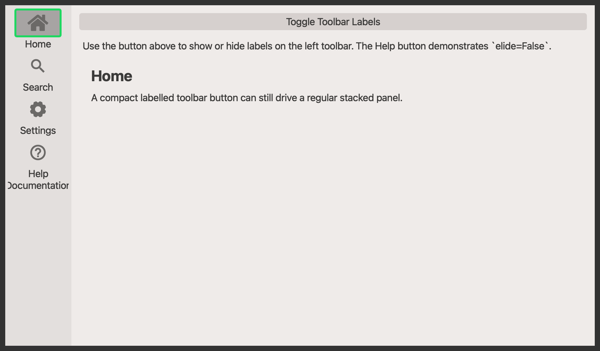

QtPanelToolbar#
A vertical toolbar that toggles stacked panels, with optional labelled buttons.
Screenshot#

Example#
Source: examples/qt_toolbar_panel.py
"""QtPanelToolbar with toggleable labels."""
from qtpy.QtCore import Qt
from qtpy.QtWidgets import QApplication, QLabel, QMainWindow, QPushButton, QVBoxLayout, QWidget
from qtextra.config import THEMES
from qtextra.widgets.qt_toolbar_panel import QtPanelToolbar
def make_panel(title: str, body: str) -> QWidget:
panel = QWidget()
layout = QVBoxLayout(panel)
layout.addWidget(QLabel(f"<h2>{title}</h2>"))
content = QLabel(body)
content.setWordWrap(True)
layout.addWidget(content)
layout.addStretch()
return panel
app = QApplication([])
window = QMainWindow()
window.setWindowTitle("QtPanelToolbar")
window.resize(900, 520)
THEMES.apply(window)
toolbar = QtPanelToolbar(window, label_hidden=False)
window.addToolBar(Qt.ToolBarArea.LeftToolBarArea, toolbar)
toolbar.add_widget(
"home",
title="Home",
widget=make_panel("Home", "A compact labelled toolbar button can still drive a regular stacked panel."),
tooltip="Show the home panel.",
)
toolbar.add_widget(
"zoom",
title="Search",
widget=make_panel("Search", "Toggle labels on and off to compare the compact and expanded toolbar layouts."),
tooltip="Show the search panel.",
)
toolbar.add_widget(
"gear",
title="Settings",
widget=make_panel("Settings", "Single-line labels stay compact by default because the toolbar elides them."),
tooltip="Show the settings panel.",
)
toolbar.add_widget(
"help",
title="Help\nDocumentation",
widget=make_panel(
"Help",
"This button disables elision, so the toolbar widens and all buttons remain horizontally centered.",
),
tooltip="Show the help panel.",
elide=False,
)
controls = QWidget()
controls_layout = QVBoxLayout(controls)
toggle_btn = QPushButton("Toggle Toolbar Labels")
toggle_btn.clicked.connect(lambda: setattr(toolbar, "label_hidden", not toolbar.label_hidden))
controls_layout.addWidget(toggle_btn)
info = QLabel(
"Use the button above to show or hide labels on the left toolbar. The Help button demonstrates `elide=False`."
)
info.setWordWrap(True)
controls_layout.addWidget(info)
controls_layout.addWidget(toolbar.stack_widget)
window.setCentralWidget(controls)
window.show()
app.exec_()
API#
Qt Class#
Methods#
Toolbar wrapper around :class:QtPanelWidget.
This exposes the most common panel-widget methods directly on the toolbar
instance so it can be used like a normal QToolBar in applications.
label_hidden: bool
property
writable
#
Get label hidden state.
stack_widget: QStackedWidget
property
#
Get an instance of the stack widget.
deactivate_all() -> None
#
Deactivate all indicators.
set_disabled(button: QtToolbarPushButton | QtLabelledToolbarPushButton, disable: bool) -> None
#
Set the widget as disabled.
Qt Class#
Methods#
A vertical toolbar paired with a stacked panel area.
The toolbar manages a set of QtToolbarPushButton or
QtLabelledToolbarPushButton instances and keeps them synchronized with
the panel stack. Buttons can either trigger a callback directly or toggle
a panel widget in the adjacent QStackedWidget.
label_hidden: bool
property
writable
#
Get label hidden state.
stack_widget: QStackedWidget
property
#
Get stack widget.
add_home_button() -> None
#
Add home button.
add_separator_after(button: QtToolbarPushButton | QtLabelledToolbarPushButton) -> None
#
Add separator.
add_separator_before(button: QtToolbarPushButton | QtLabelledToolbarPushButton) -> None
#
Add separator before button.
add_widget(name: str, tooltip: str = '', widget: QWidget | None = None, location: str = 'top', title: str | None = None, elide: bool = True, func: ty.Callable | None = None) -> QtToolbarPushButton | QtLabelledToolbarPushButton
#
Add a toolbar button and optionally bind it to a panel widget.
Parameters:
| Name | Type | Description | Default |
|---|---|---|---|
name
|
str
|
name of the object that will be used to select the icon |
required |
tooltip
|
Optional[str]
|
text that will be used to generate the tooltip information - it will be overwritten if the |
''
|
widget
|
Optional[QWidget]
|
widget that will be inserted into the stack |
None
|
location
|
str
|
location of the button - allowed values include |
'top'
|
title
|
str
|
Title to be given to the button. |
None
|
elide
|
bool
|
Whether labAelled toolbar buttons should elide their text to stay compact. |
True
|
func
|
Optional[Callable]
|
function that will be connected to the button click event |
None
|
connect_widget(name: str, widget: QWidget, tooltip: str | None = None) -> None
#
Bind a panel widget to an existing toolbar button.
disable_widget(button: QtToolbarPushButton | QtLabelledToolbarPushButton) -> None
#
Disable widget.
enable_widget(button: QtToolbarPushButton | QtLabelledToolbarPushButton) -> None
#
Enable widget.
get_index(button: QtToolbarPushButton | QtLabelledToolbarPushButton) -> int
#
Get index.
get_widget(name: str) -> QtToolbarPushButton | QtLabelledToolbarPushButton | None
#
Get widget.
show_about_stack(_: ty.Any) -> None
#
Show about stack.
widget_iter() -> ty.Iterator[QtToolbarPushButton | QtLabelledToolbarPushButton]
#
Iterate over widgets.